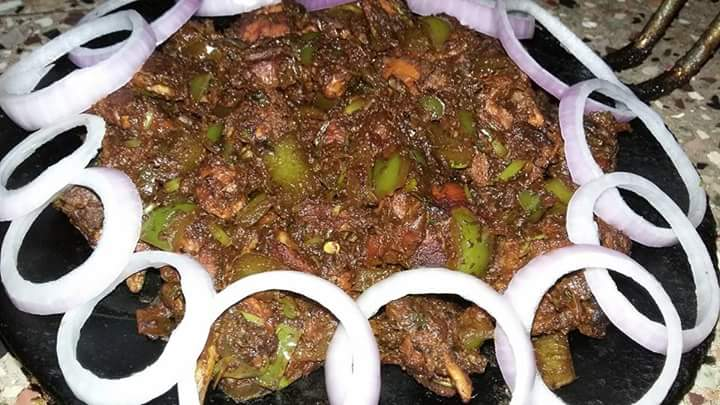

Tawa Chicken

Tawa Chicken is a Punjabi recipe where Chicken pieces are marinaded in a paste with Gram Flour and Spices and cooked in a aromatic curry base.
This is a popular street food that is made on large Tawas/a Cast Iron flat or concave round shaped pan usually used for making Rotis/Chapatis. You can of course use a frying pan.
Ingredients
- Chicken
- Gram flour
- Onion
- Ginger
- Tomatoes
- Garlic
- Lemon
- Spices
- Turmeric
- Garam masala
- Chilli powder
- Cumin
- Coriander
- Fennel
- Fenugreek seeds
- Salt
Steps
- Prepare a paste with Gram flour, Lemon juice, Ginger, Garlic, Turmeric, Coriander, Fennel, Cumin, salt.
- Marinate chicken with the paste and leave it for 1 hr.
- Cook chicken in oil so that it is evenly fried from all sides and put them aside.
- Now prepare curry base with onion and fenugreek fried in oil until they turn brown.
- Add ginger and garlic before adding tomatoes.
- Ground spices and cook for another 5 mins
- Add chicken to the curry base and set stove to low flame. Let it cook for another 5 mins